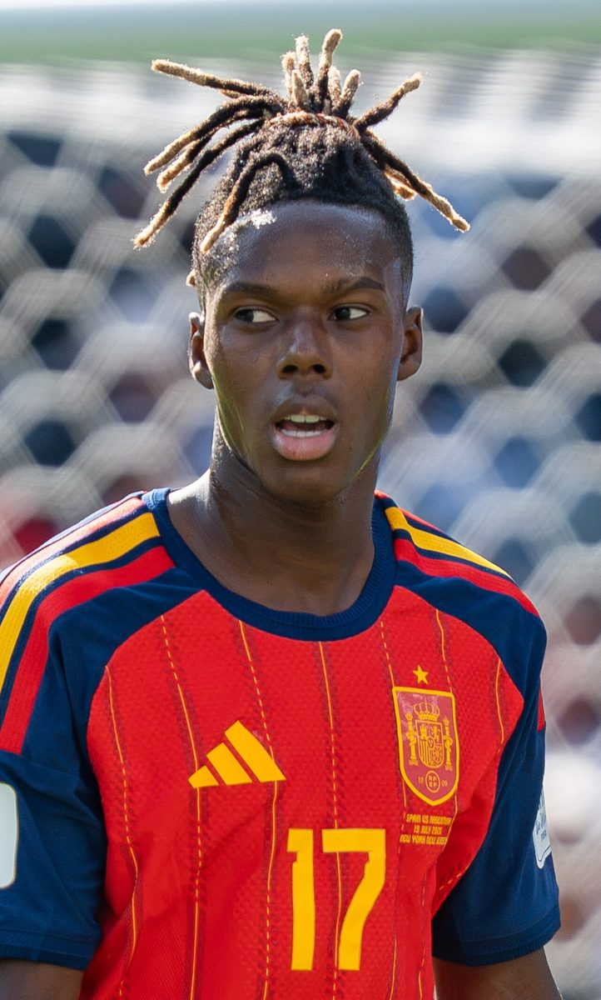

英格兰十人作战 3比2客胜西班牙 力压对手获欧国联小组第一
凯恩、孔萨和本·怀特先后破门，埃利奥特·安德森随后被罚下，英格兰顶住反扑，终结西班牙43场不败。

发生了什么
2026年11月15日（周日），英格兰在马德里大都会球场3比2击败西班牙，以欧国联A3组第一的身份结束小组赛。据英国报业协会报道，这场失利终结了世界冠军西班牙队43场不败的纪录。
上半场补时阶段，凯恩在禁区内被保·库巴西犯规，随后亲自主罚点球命中，帮助英格兰领先。下半场开始后，孔萨第53分钟头球攻入赖斯开出的角球，四分钟后本·怀特接摩根·罗杰斯的传球把比分改写为3比0。

最后半小时英格兰少一人作战。第63分钟，埃利奥特·安德森作为最后一名防守球员放倒拉明·亚马尔，被直接红牌罚下。两分钟后，奥亚萨瓦尔主罚点球命中；第75分钟，替补登场的尼科·威廉斯将亚马尔的传中送入网窝。
英格兰如何守住胜利
据天空体育报道，首发出场、顶替皮克福德的门将詹姆斯·特拉福德在比赛最后阶段多次扑救，包括补时阶段连续扑出费尔明·洛佩斯和奥亚萨瓦尔的射门。
为何重要

这场胜利让图赫尔执教的英格兰以小组第一身份晋级欧国联八强，并将在抽签中成为种子队。据天空体育报道，抽签将于11月20日（周五）举行，八强赛将于2027年3月下旬进行两回合较量。
关键数据
- 比分： 西班牙2比3英格兰。
- 英格兰进球： 凯恩 第45分钟（点球），孔萨 第53分钟，本·怀特 第57分钟。
- 西班牙进球： 奥亚萨瓦尔 第65分钟（点球），尼科·威廉斯 第75分钟。
- 红牌： 埃利奥特·安德森（英格兰），第63分钟。
- 球场： 马德里大都会球场。